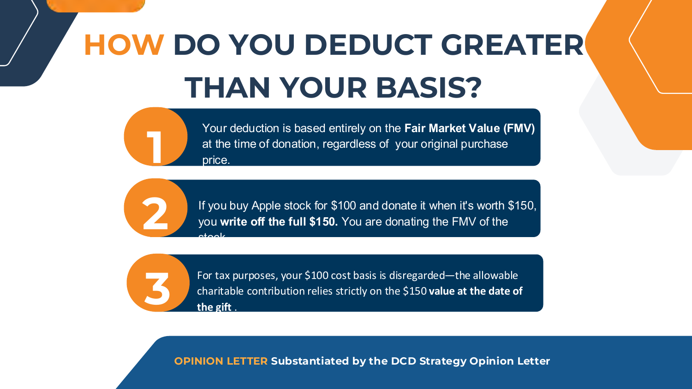
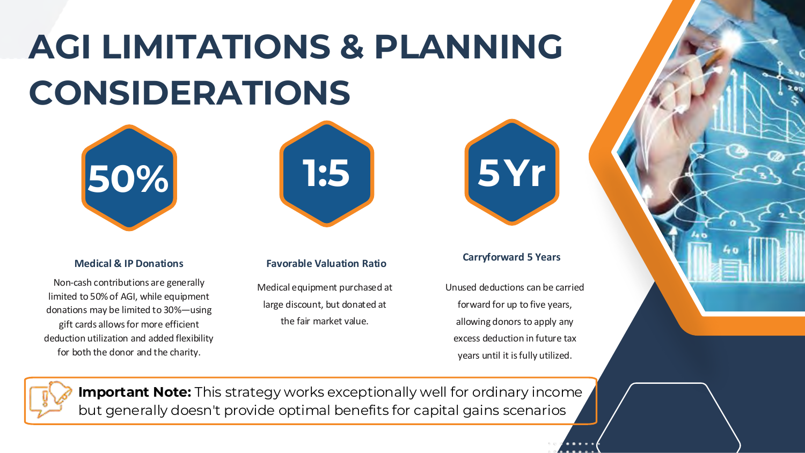
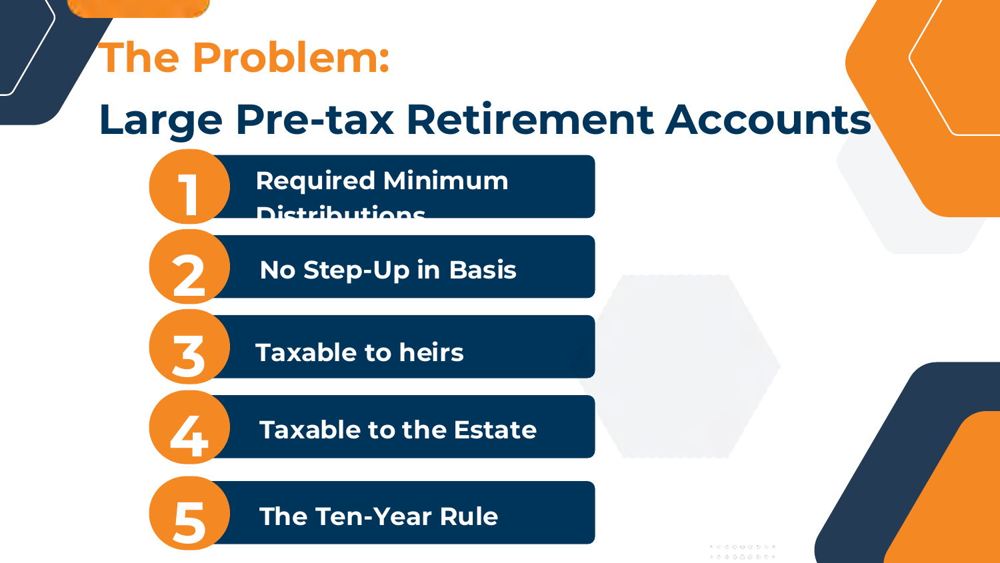
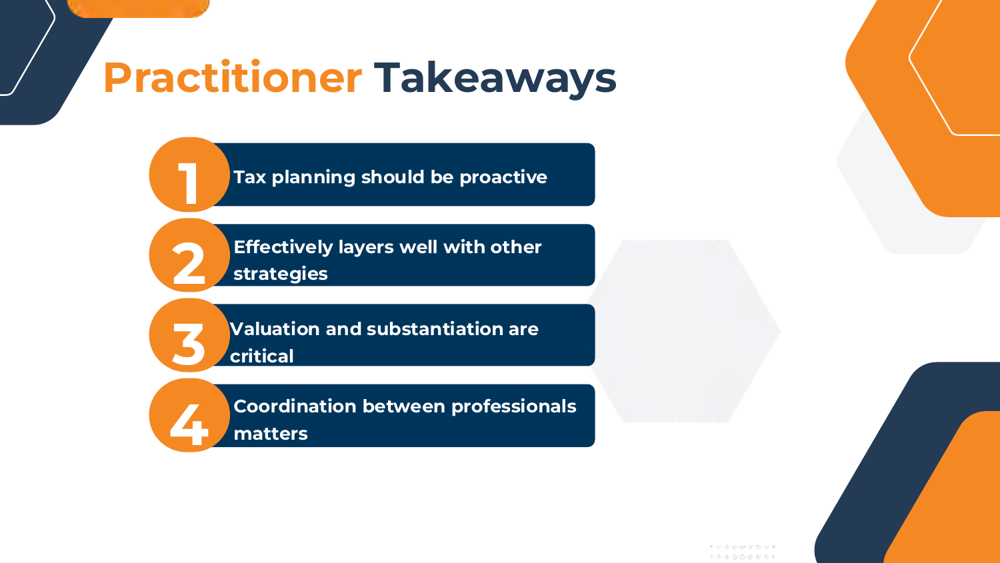

1 出发点
税法是一套"激励机制"
国会用税法引导行为，IRC §170 就是为慈善捐赠设立的激励。演讲用一张幽默的"不交税的几种方法"开场——不赚钱、不卖、不买、别带着资产离世、"绝对别住在加州"——用反讽点出：与其逃避，不如主动规划。
2 核心机制
如何抵扣得比成本更多？按 FMV
慈善捐赠的抵扣，基于捐赠当日的公允价值（FMV），而非你的购入成本。最直观的例子：你用 $100 买入的苹果股票，捐赠时值 $150，你可按 $150 抵扣——$100 的成本基础在税务上被忽略。

3 边界与限制
AGI 限额、5 年结转，以及它适合谁
非现金捐赠通常受 AGI 的限制（一般 50%、设备类可能 30%），未用完的抵扣可结转 5 年。一个关键提醒：该策略对普通所得效果好，对资本利得场景通常不是最优。

4 典型应用
大额税前退休账户的难题
理想客户：W-2 或普通所得 > $50 万、有大额传统 IRA/401(k)、合格投资者、追求主动规划。大额税前账户的痛点很集中——RMD、无成本基础上调、对继承人征税、对遗产征税、十年清算规则。一个常见解法：做 Roth 转换抬高 AGI，再用慈善抵扣抵消约一半税负，让 Roth 余生免税增长、并免税传给继承人。

Practitioner Takeaways
从业者要点
- 税务规划要主动：客户越来越期待主动规划，而不只是报税。
- 善于叠加：慈善规划能与其他策略（如 Roth 转换）有效层叠。
- 估值与凭证是命门：合格评估、同期书面确认必不可少。
- 协同决定成败：顾问、CPA、律师之间的协调至关重要。

⚠️ 仅供教育用途，非法律或税务建议。结果取决于个案事实；涉及 IRC §170 / §7701(o) 经济实质、合格评估与凭证要求；需独立 CPA 与法律审查；参与通常要求合格投资者身份。